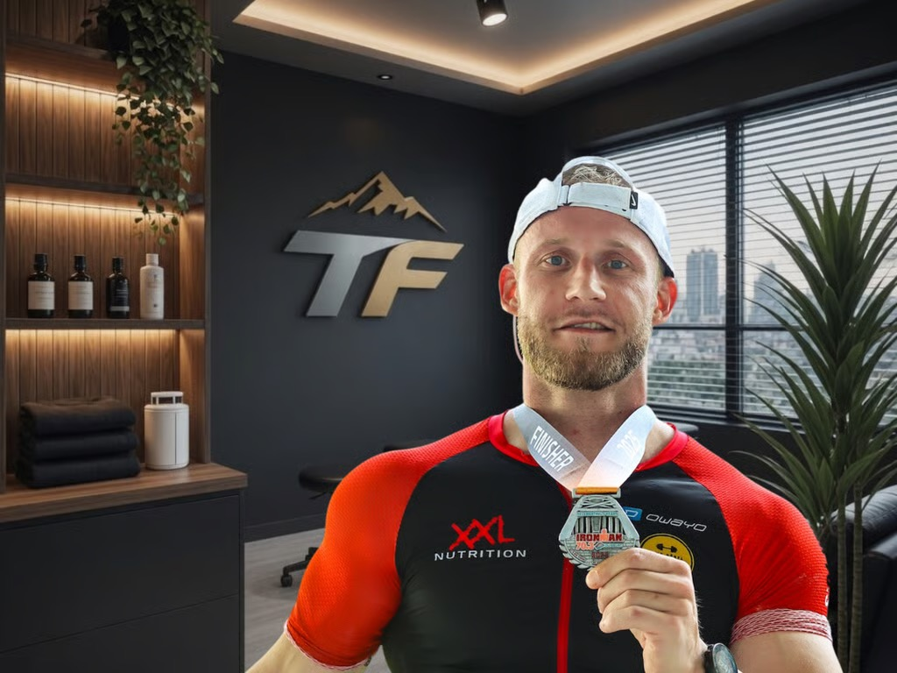
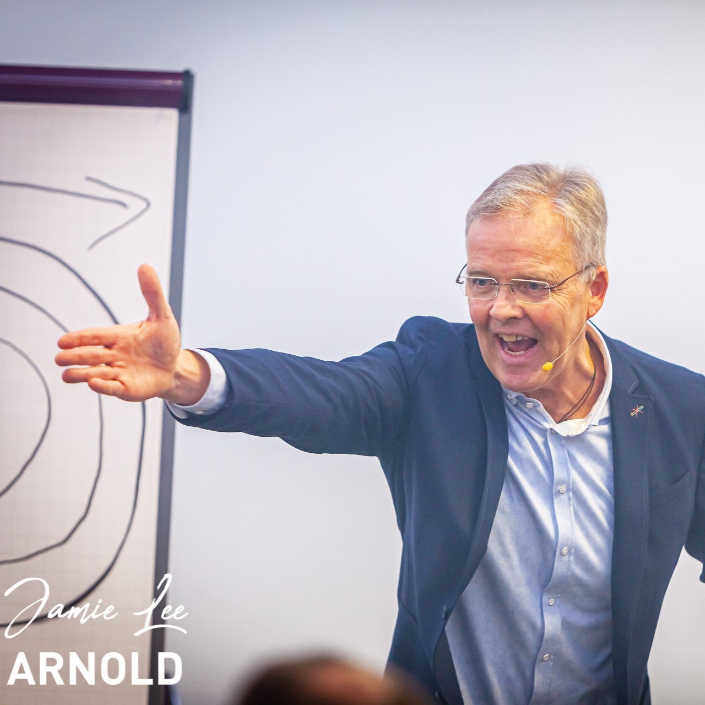
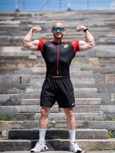

Was viele erleben
Viele Menschen funktionieren auf hohem Niveau und bleiben trotzdem hinter ihren Möglichkeiten.
Mentaltraining · Klarheit · Performance
Mentale Stärke. Klare Richtung. Ruhige Präsenz.
Mentaltraining Spitzensport · Nürnberg · München
trueFormance begleitet Menschen, die unter Druck ruhig bleiben und Leistung bewusst abrufen wollen. Mit systemischem Mentaltraining für Spitzensport und klarer Begleitung in Nürnberg und München.
Was viele erleben
Viele Menschen funktionieren auf hohem Niveau und bleiben trotzdem hinter ihren Möglichkeiten.
Was trueFormance anders macht
Entwicklung entsteht dort, wo Systemverständnis, mentale Klarheit und reale Umsetzung zusammenkommen.
Schnellüberblick
Vier klare Einstiege zeigen dir sofort, worum es bei trueFormance geht und wo du auf der Seite tiefer einsteigen kannst.
01 Spitzensport
Mentale Arbeit für Wettkampf, Fokus, Belastbarkeit und nachhaltige Leistung.
Zum Bereich02 System & Realität
Innere Muster erkennen und in klare Entscheidungen und Wirkung übersetzen.
Zum Bereich03 Coaches
Dominik und Stefan verbinden Leistungserfahrung mit systemischer Tiefe.
Zum Bereich04 Programm
Ein klarer Ablauf für Analyse, Veränderung und stabile Integration im Alltag.
Zum BereichMentaltraining
Spitzensport verlangt mehr als Motivation. trueFormance begleitet Athleten dabei, mentale Muster zu erkennen, in Drucksituationen handlungsfähig zu bleiben und Leistung dann abzurufen, wenn sie wirklich zählt.
Im Fokus
Ob Wettkampfvorbereitung, Rückschlag, Formkrise oder der Umgang mit äußerem Druck: Wir arbeiten nicht an Symptomen, sondern an den inneren Prozessen, die Leistung steuern.
01
Routinen entwickeln, die Sicherheit geben und Klarheit schaffen.
02
In entscheidenden Momenten bewusst bleiben statt unbewusst zu reagieren.
03
Mentale Stärke so aufbauen, dass sie im Alltag und im Wettkampf trägt.
trueFormance
Nicht das Wissen fehlt, sondern oft der Zugang zu den eigenen inneren Prozessen. Wer Gedanken, Überzeugungen und emotionale Reaktionen versteht, gewinnt Handlungsspielraum zurück.
Das System
Der innere Teil, der Wahrnehmung, Bewertung und Verhalten unbewusst mitsteuert.
Die Realität
Der äußere Teil, in dem Entscheidungen, Leistung und Wirkung sichtbar werden.
Für wen ist trueFormance?
Für Menschen, die ihr Potenzial im Training und Wettkampf vollständig entfalten wollen.
Für Menschen, die Verantwortung tragen und auch unter Druck klare Entscheidungen treffen müssen.
Für Menschen, die beruflich erfolgreich sein möchten, ohne Gesundheit und Lebensqualität zu verlieren.
Für Persönlichkeiten, die merken, dass alte Muster bremsen und neue Perspektiven entstehen dürfen.
Unsere Schwerpunkte
Souverän bleiben, wenn Druck entsteht.
Mehr Klarheit über Identität, Werte und Ziele gewinnen.
Hinderliche Muster erkennen und nachhaltig verändern.
Belastungen besser bewältigen und schneller in die eigene Kraft finden.
Potenziale gezielt entwickeln und im entscheidenden Moment abrufen.
Menschen wirksam führen und Beziehungen bewusst gestalten.
Die Gründer & Coaches
Dominik bringt die Perspektive gelebter Leistung mit, Stefan die Perspektive systemischen Verständnisses. Gemeinsam begleiten sie Menschen als trueFormance Coaches dabei, mentale Stärke, Klarheit und nachhaltige Entwicklung wirklich in den Alltag zu übersetzen.

Dominik Dörfl
Leistung aus Erfahrung
Seit mehr als zwei Jahrzehnten beschäftigt er sich mit Leistung, Training, mentaler Belastbarkeit und persönlicher Entwicklung. Von Meistertiteln im Bodybuilding bis zu Marathons, Triathlons, Ironman-Wettkämpfen und mentalen Challenges kennt er Leistungsdruck, Rückschläge und Wachstum aus erster Hand.
Stefan Scherer
Entwicklung beginnt im Kopf
Als Experte für Persönlichkeitsentwicklung, Leadership und systemisches Coaching begleitet er seit vielen Jahren Führungskräfte, Unternehmer, Teams und Einzelpersonen in Veränderungsprozessen. Sein Fokus liegt auf Klarheit, Haltung und wirksamer Kommunikation.
Mentaltraining in der Praxis
Coaching, Bühne, Sport und mentale Challenge zeigen trueFormance dort, wo innere Klarheit im echten Moment Wirkung entfaltet.

Stefan Scherer
Ob Vortrag, Workshop oder Coaching: Stefan macht innere Muster sichtbar und schafft Klarheit, wenn Haltung, Kommunikation und Wirkung entscheidend sind.

Dominik Dörfl
Dominik verkörpert den Anspruch von trueFormance: Leistung nicht nur denken, sondern unter Belastung bewusst abrufen und im Alltag stabil umsetzen.
Stefan Scherer
Stefan erklärt den mentalen Bezug hinter einer sportlichen Erfahrung und macht sichtbar, wie Bedeutung und Haltung das Erleben von Leistung prägen.
Dominik Dörfl
Dominik zeigt den Everest Day mit 8848 Höhenmetern an einem einzigen Tag, den er als mentale Challenge absolviert hat.
Programm
Wir betrachten die aktuelle Situation, Herausforderungen und Ziele.
Wir identifizieren Muster, Glaubenssätze und innere Prozesse.
Gemeinsam entwickeln wir neue Strategien und Denkweisen.
Die eigentliche Entwicklung findet im Alltag statt und wird begleitet.
Das Ziel ist keine kurzfristige Motivation, sondern langfristige Transformation.
Kontakt & Instagram
Für Anfragen, Austausch oder einen ersten Kontakt erreichst du uns direkt per E-Mail oder über Instagram.
Unser Versprechen
trueFormance hilft Menschen dabei, sich selbst besser zu verstehen, Potenziale freizusetzen und Leistung mit innerer Klarheit zu verbinden. Nicht höher. Nicht schneller. Sondern bewusster, wirksamer und dauerhaft stabil.
Zurück nach oben